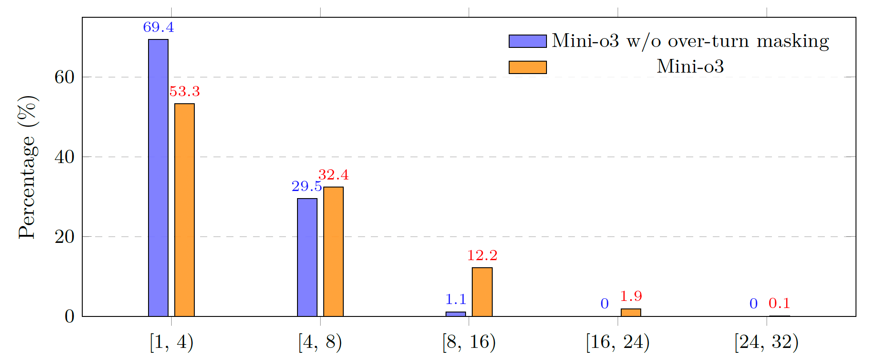

Training Recipe for Mini-o3
Training Recipe for Mini-o3
Training Mini-o3 includes two stages:
- Stage 1: Cold-start Supervised Fine-tuning [SFT Model].
- Stage 2: Reinforcement Learning [RL Model].
- Lower Down Max Pixels. The base model’s context length is constrained to 32K tokens. With the default image budget of roughly 12M pixels, the allowable number of interaction turns becomes severely limited by context, which hampers trial-and-error exploration on difficult tasks. To increase the feasible turn count per episode, we reduce the maximum pixels per image to 2M (or lower if necessary). This simple adjustment allows more turns to fit within the same context budget, improving solve rates on long-horizon problems.
- Over-turn Masking. In the vanilla GRPO setting, each question $q$ is passed to the policy model to generate a group of outputs $\{o_i\}_{i=1}^{G}$. Rewards $r$ are then computed based on the correctness of the responses. Notably, when a response hits the maximum number of turns or exceeds the context length limit, the reward is set to $0$, as no valid answer can be produced in such cases. Subsequently, we compute advantages $A$ by normalizing the rewards and update the policy using the GRPO optimization objective over mini-batches. In our implementation, we do not include KL or entropy regularization. Formally, the optimization objective is given by:
\begin{equation}
\begin{split}
\mathcal{J}_{GRPO}(\theta) = \mathbb{E}_{[q \sim \mathcal{D}, \{o_i\}_{i=1}^G \sim \pi_{\theta_{old}}(\cdot|q)]} \frac{1}{G}\sum_{i=1}^G \left(\min\left(\frac{\pi_\theta(o_i |q)}{\pi_{\theta_{old}}(o_i |q)} A_i, \text{clip} \left( \frac{\pi_\theta(o_i |q)}{\pi_{\theta_{old}}(o_i |q)}, 1 - \epsilon, 1 + \epsilon \right) A_i \right) \right)
\end{split}
\label{eq:GRPO}
\end{equation}
\begin{equation}
\begin{split}
A_i = \frac{r_i - mean(\{r_1,r_2,...,r_G\})}{std(\{r_1, r_2, ...,r_G\})}.
\end{split}
\label{eq:advantage}
\end{equation}
However, we observe that overlength responses --- those that hit the maximum number of turns or exceed the context length --- are assigned zero reward, which translates into negative advantages after normalization. In effect, such responses are penalized and discouraged throughout training.

This design has two drawbacks. First, the correctness of overlength responses is inherently unknown; blunt penalization thus injects label noise into the return signal and can destabilize training. Second, for efficiency, the turn limit during training must remain modest (typically fewer than $10$ turns). As a consequence, overlength responses occur frequently --- exceeding $20\%$ at the beginning of training. In this regime, naïve penalization biases the model to answer prematurely, substantially suppressing the number of interaction turns (see above figure). This makes highly challenging tasks intractable and severely constrains the potential of test-time scaling.
To prevent the model from collapsing into an “answer earlier” strategy, we propose an overlength masking technique whose objective is to avoid penalizing overlength responses. The overall procedure is illustrated in the above figure. Concretely, in addition to the rewards $r$ and advantages $A$ defined as in vanilla GRPO, we introduce a completion mask $M$ that indicates whether a response terminates successfully. We then compute masked advantages $A_i'=M_i \cdot A_i$, so that overlength trajectories (with $M_i=0$) do not contribute negative learning signals. The modified objective, building on the vanilla GRPO, is summarized below, with the changes highlighted in red in the formula.\begin{equation} \begin{split} \mathcal{J}^{\textcolor{red}{overlength}}_{GRPO}(\theta) & = \mathbb{E}_{[q \sim \mathcal{D}, \{o_i\}_{i=1}^G \sim \pi_{\theta_{old}}(\cdot|q)]} \\ \frac{1}{\textcolor{red}{\sum_i^{G}M_i}}\sum_{i=1}^G & \left(\min\left(\frac{\pi_\theta(o_i |q)}{\pi_{\theta_{old}}(o_i |q)} A_i \textcolor{red}{\cdot M_i}, \text{clip} \left( \frac{\pi_\theta(o_i |q)}{\pi_{\theta_{old}}(o_i |q)}, 1 - \epsilon, 1 + \epsilon \right) A_i\textcolor{red}{\cdot M_i} \right) \right) \end{split} \label{eq:new_GRPO} \end{equation} \begin{equation} \begin{split} \textcolor{red}{M_i = \mathcal{1}\{|o_i| <= C_{context}\} \cdot \mathcal{1}\{ \text{turn}(o_i) <= C_{turn}\}}. \end{split} \label{eq:new_advantage} \end{equation}Here, $|o_i|$ and $\text{turn}(o_i)$ denote the token length and the number of turns in response $o_i$, respectively. Moreover, because some responses are incomplete, we normalize the objective by the number of completed generations, $\sum_i^{G}M_i$, rather than by the total number of generations $G$.With this technique, we mask out the loss for overlength responses, thereby removing any implicit penalty. Notably, although we adopt a relatively small upper bound on the number of turns during training, test-time trajectories can extend to dozens of rounds, with accuracy improving monotonically. The proposed overlength masking is thus essential for realizing the benefits of test-time scaling in the number of interaction turns, as illustrated in the above figure.
 Visual Probe Dataset
Visual Probe Dataset
Hard instances are essential for encouraging reflective, trial-and-error reasoning during reinforcement learning. To this end, we construct a challenging visual search dataset, the Visual Probe Dataset (VisualProbe). It comprises 4,000 visual question–answer pairs for training and 500 pairs for testing, spanning three difficulty levels: easy, medium, and hard. Compared with prior visual search benchmarks, VisualProbe is characterized by:
- Small targets
- Numerous distractor objects
- High-resolution images
Demo
 Performance
Performance
 Visual Search: Mini-o3 achieves the state-of-the-art results among various benchmarks
Visual Search: Mini-o3 achieves the state-of-the-art results among various benchmarks
| Model | VisualProbe | V* Bench | HR-Bench | MME-Realworld | |||
|---|---|---|---|---|---|---|---|
| hard | medium | easy | 4K | 8K | |||
| GPT-4o | 11.2 | 15.4 | 47.5 | 65.2 | 62.0 | 58.3 | 45.2 |
| LLaVA-OneVision | 13.4 | 12.5 | 36.2 | 70.9 | 61.2 | 54.0 | 57.4 |
| Qwen2.5-VL-Instruct | 23.9 | 26.0 | 39.1 | 75.5 | 68.2 | 62.7 | 57.3 |
| SEAL† | – | – | – | 75.4 | – | – | – |
| DyFo† | – | – | – | 81.2 | – | – | – |
| Chain-of-Focus† | – | – | – | 88.0 | – | – | – |
| Pixel Reasoner‡ | 28.8 | 29.6 | 58.4 | 86.3 | 74.0 | 66.9 | 64.4 |
| DeepEyes‡ | 35.1 | 29.8 | 60.1 | 83.3 | 73.2 | 69.5 | 64.0 |
| Mini-o3 (Ours) | 48.0 | 50.4 | 67.0 | 88.2 | 77.5 | 73.3 | 65.5 |
Acknowledgement
This website is adapted from Nerfies and LLaVA, licensed under a Creative Commons Attribution-ShareAlike 4.0 International License. We thank the Qwen team for giving us access to their models, and open-source projects, including V* Bench and DeepEyes.
Usage and License Notices: The data, code and checkpoint is intended and licensed for research use only. They are also restricted to uses that follow the license agreement of Qwen and Gemini-2.5-Pro. The dataset is CC BY NC 4.0 (allowing only non-commercial use) and models trained using the dataset should not be used outside of research purposes.